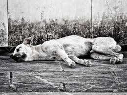

Caninos que llegan al alma

Casa de Reposo
En el mundo existen dos tipos de personas, según el escritor Enrique Jardiel Poncela: los que necesitan amar y los que necesitan ser amados. En otras palabras, los que aman a los gatos y los que tienen predilección por los perros. Basta con averiguar que animal prefiere cada uno, para saber cómo percibe el amor. El gato es “egoísmo”, el perro es “generosidad”. El gato es “frialdad”, el perro da calor. Es por eso que el primero está dispuesto a recibir el cariño de su amo, mientras que el segundo ansía darlo. Así lo afirman los protagonistas de la obra ‘El amor del gato y del perro’, de Jardiel. Aunque cada personaje prefiere un animal distinto, es la forma en la que entienden que son un complemento.
extraído del Diario EL COMERCIO en la siguiente dirección:
http://www.elcomercio.com/afull/perros-gatos-sentir-amor.html.